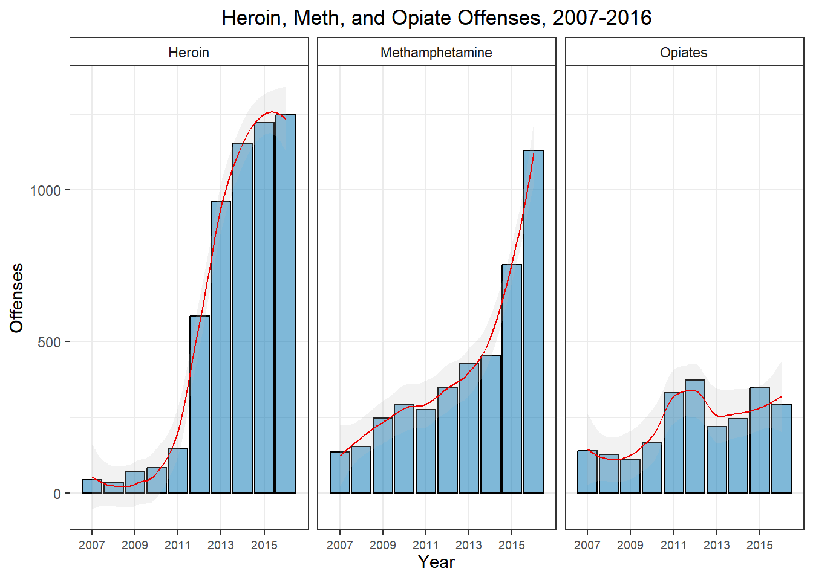
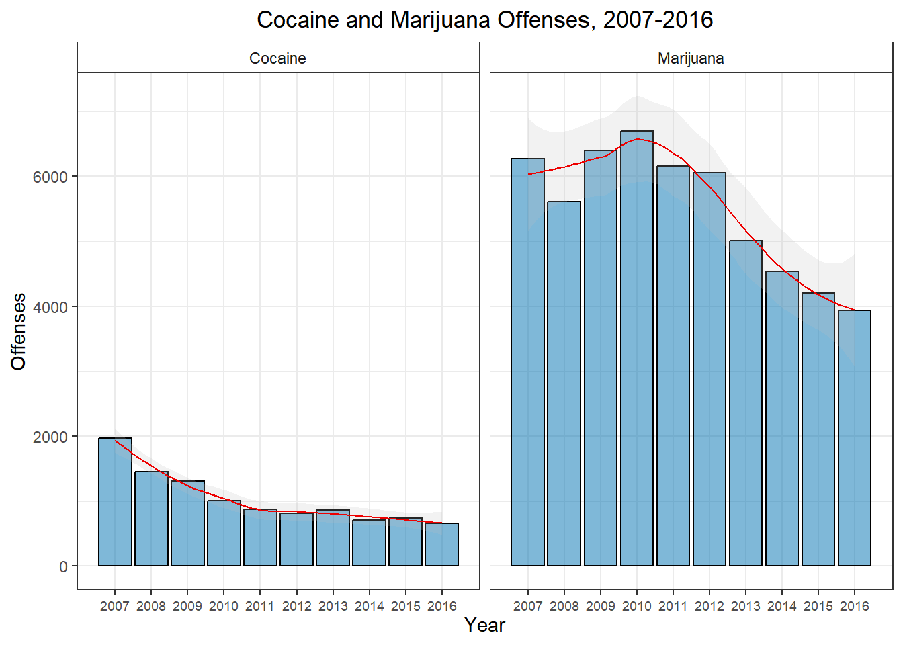
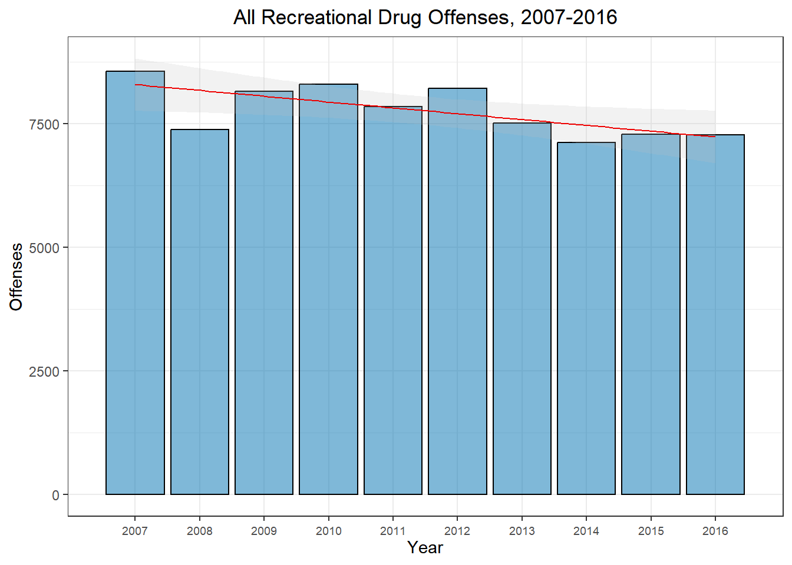
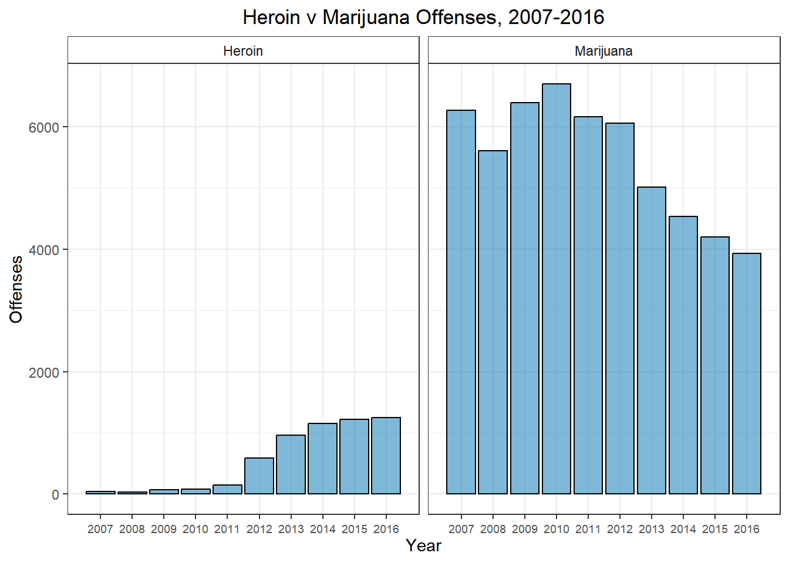
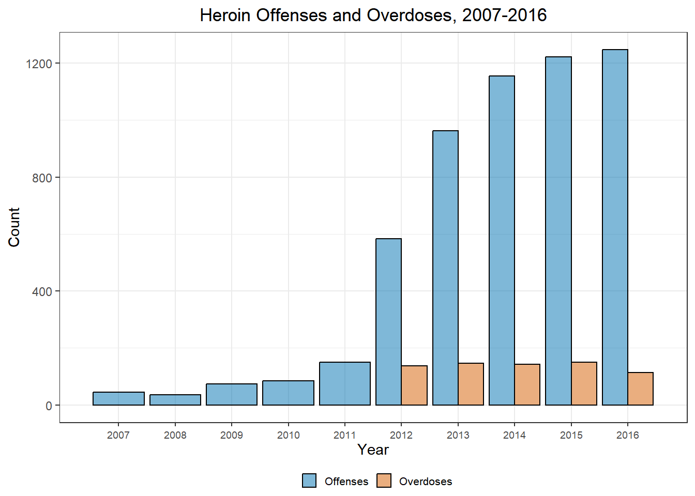
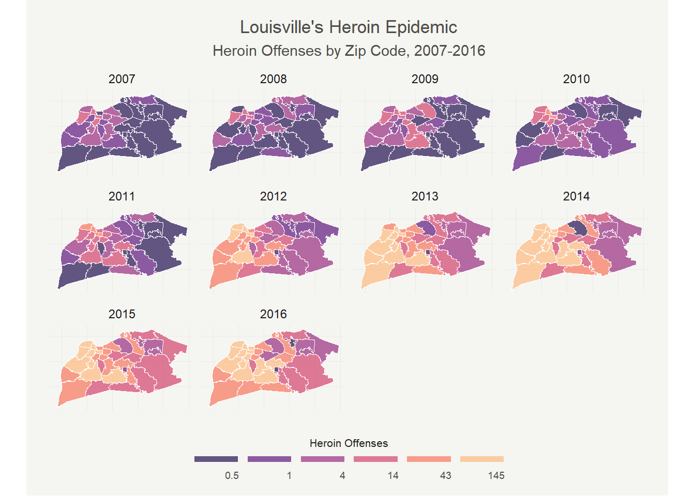

If you have been paying any attention to the news recently, you will have heard that the United States is experiencing a resurgence of heroin use. Unfortunately, Louisville is smack in the middle of this growing epidemic. Locally, I think the perception is that one, this problem sprung up overnight with no warning and two, even if heroin use is a problem, it isn’t a problem near me. But is there truth to either of these beliefs?
Being the data geek that I am, these questions piqued my curiosity. So instead of just accepting these reports as fact, I decided to see just how much of a problem heroin actually is in our region. Using heroin crime data (namely possession and trafficking) from Louisville’s open crime dataset as a proxy for use, I decided to visualize Louisville’s heroin problem to see if I could gain any insight. Is there truly a heroin epidemic? How fast did this become a problem? And probably most important to the average person, is this actually happening near me? Sadly, the answers appear to be ‘Yes’, ‘Quickly’, and ‘Absolutely’.
Overview of Various Drug Offenses
To get a sense of the general drug ‘scene’ in Louisville I want to look at the number of offenses of the major drugs over the past decade. I can’t really tell if heroin is a problem if I have no idea of the general level of drug use in our city.
Using some simple bar plots, the huge increase in heroin offenses is immediately obvious. We have seen a staggering 2834% increase in heroin offenses from 2007 to 2016. While it is true we have seen an increase in methamphetamine and opiate offenses–by 831% and 208% respectively– it is not to nearly the same degree. Heroin’s offenses have increased over 3 times as fast as those of meth and other opiates, even though we are seeing large increases in crime related to those drugs too!
When I first saw this–after the initial shock–I figured drug use in general over the past decade must just be up. A rising tide lifts all boats so to speak. However, when you plot out the other major recreational drugs, you don’t see this. We have seen fairly sizable decreases in criminal activity relating to cocaine and marijuana(-33% and -63% respectively) over the same period of time.

In fact, if we look at a plot of all recreational drug offenses, we see a slight trend downward over the past decade.

A couple important points probably should be noted here. First, if you look at the scale of the y-axis on all the previous plots, you will notice that marijuana offenses dominate the overall count. If you plot heroin and marijuana offenses on the same scale, heroin use still appears minuscule. As of 2016 we still had 3.2 times more marijuana offenses than heroin offenses.

This is not to say that heroin use is small and inconsequential. What this means is that marijuana offenses have the power to move(and very possibly distort) the entire drug picture by itself. As can often be the case, taking a very aggregated view of the data would lead you to a completely incorrect conclusion.
Secondly, we need to keep in mind that none of this is happening in a vacuum. There are very real social, political, and economic changes that happen which do end up altering the landscape. Unfortunately, these changes can make it very difficult to pin down exactly what is happening. For instance, when Obama first took office in 2008, he voiced a softer federal stance on prosecuting marijuana crimes. So while marijuana was–and still is–illegal in all forms in Kentucky, did this federal statement affect the enforcement and prosecution of marijuana offenses in Louisville? It is way too complicated of an issue to answer simply yes or no, but I think it would be naive to think it had zero effect. But we can’t be sure (at least with this simplistic analysis) that there wasn’t simply a coincidental decline in marijuana use, which also resulted in fewer marijuana crimes. This same sort of logic applies to offenses of all types.
In that vein, we have to at least mention the changes in the opiate drug landscape that could explain some of this heroin epidemic. Back in 2010 and 2011, two of the major opiates abused recreationally were reformulated to make recreational use more difficult. Around the same time, various systems(for instance KASPER) were put in place to make abusing prescription opiates more difficult. Though it is always difficult to establish causation, it seems very likely that effectively restricting the supply of prescription opiates around 2011 triggered a surge in heroin demand as a replacement.
Regardless of what caused the surge in heroin use, the grim reality of the increase can been seen in the plot below. This plot shows the number of overdoses reported in the crime data. While overdoses aren’t strictly a crime, they are reported in the crime statistics. I can’t be sure that the overdoses are all heroin related(for instance, meth shows a correlation of 0.68), but a correlation of 0.93 between the heroin uptick and the overdoses is extraordinarily coincidental if they aren’t related.

This explosion of overdoses since 2012 really drives home the true human cost of the heroin epidemic. I think it is crucial to remember that these are real people with real lives who are being ravaged by addiction and, ultimately, death.
Mapping the Epidemic
After this sobering dose of reality, I want to see exactly where this is happening within our city. In this day and age, we hear news of heroin crimes and overdoes almost nightly on the news, but despite this, I think many people still assume this is something that only happens in “bad” neighborhoods with bad people. This distancing thought makes it easy to put an unpleasant piece of information out of our immediate focus. But doing that doesn’t change the reality– heroin use is all around us today.
The first thing I wanted to do when I decided to look into heroin use was map out the data in some way. Luckily, R has some brilliant mapping tools that allow me to do just that. The finest-grained geographic area I could sub-divide the data into turned out to be zip codes, but this works perfectly for a type of plot typically known as a choropleth plot.
Using a shapefile from this website, I grabbed the zip code boundaries for the city of Louisville and after some cleaning, aggregation, and a ton of formatting(huge thanks to Timo Grossenbacher and his brilliant post on formatting clean choropleth plots) we can easily see the spread of heroin use through the city.

The quick saturation of the city is pretty shocking. Even after seeing the sharp rise in 2012 in the plots earlier, the near immediate darkening of the west and south end in 2012 took me by surprise. In 2016, we had 11 zip codes that saw at least 1 heroin crime per week. In 40203, they saw a heroin crime every 2.6 days!
But perhaps even more shocking is that even the ‘better’ parts of the city are being hit. The east end and regions like Prospect– typically thought of as very affluent parts of the city– have seen huge increases as well. We see east end regions with increases as high as 575%. This is definitely not something that is only happening in one area of the city. An incredible 45.5% of Louisville zip codes are seeing at least 1 heroin crime every other week. Keep in mind that this is heroin crime data–meaning that heroin use is likely to be significantly higher in all regions. I shudder to think about the true number of overdoses or the number of families affected by the epidemic.
It should be noted that none of this really changes when you normalize for population density. The regions with high counts downtown are not merely high because they have a higher population density. In fact, I was going to included a normalized map, but there was so little difference that it didn’t seem to warrant the space.
Conclusion
So, sadly, it seems since around 2012 Louisville has been in the midst of a heroin epidemic. If you don’t think it’s happening near you, you are being blinded by wishful thinking. Heroin crime–and one can then surmise heroin use– is happening all around us. While I don’t proclaim to know the solution to such a complex, multifaceted problem, I do think the first step is to acknowledgement that this is an issue for everyone in our community. The consequences of this epidemic–be it in lives taken, or families shattered, or property destroyed–are affecting people of all ages, races, genders and incomes.
As usual, all code used in this report can be found here.